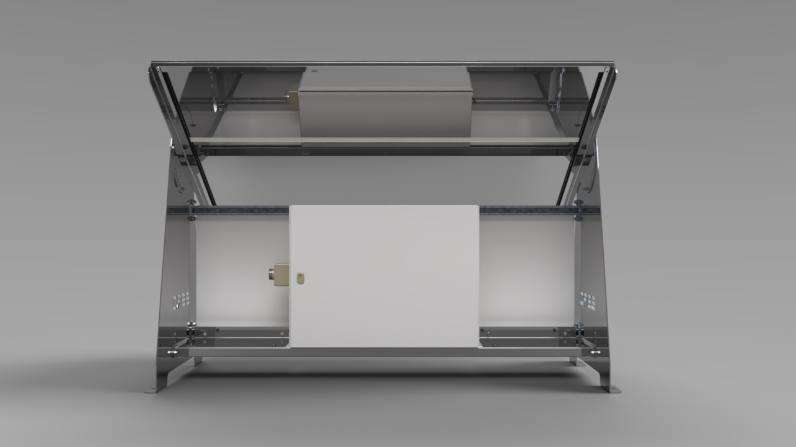
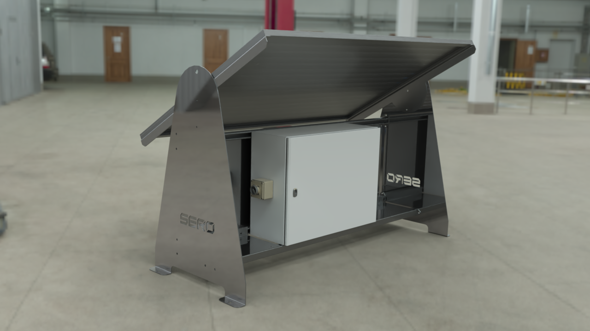

Solar Skid Design
Mechanical Design • CAD Drafting • 3D Modeling • Technical Documentation
Project Overview
This project involved the development of a conceptual solar skid design intended to support mechanical equipment layout, presentation, and future fabrication review.
The design focused on creating a clean, practical, and understandable engineering presentation using 3D CAD modeling, rendering, and technical drawing documentation.
Project Details
Category: Mechanical Design / CAD Drafting
Output: 3D Model, Drawing, Rendering, PDF
Use: Concept Presentation / Design Review
Status: Portfolio Demonstration
Project Objectives
01 Functional Layout
Create a practical skid arrangement suitable for equipment positioning and review.
02 CAD Modeling
Develop a clear 3D CAD model to communicate the design concept visually.
03 Technical Drawing
Prepare drawing output that explains the geometry and design intent.
04 Presentation Output
Generate renderings and PDF documentation for portfolio and client review.
Design Process
Requirement Review
Reviewed the design intent and identified the need for a clear skid concept suitable for visual and technical presentation.
Concept Development
Developed the general arrangement and layout to create a functional and presentable mechanical skid design.
3D CAD Modeling
Created the CAD model and refined the visual structure to make the concept understandable from engineering and client perspectives.
Drawing & Rendering
Produced technical drawing output and rendering images for documentation, portfolio presentation, and design communication.
Project Gallery

Skid Rendering
Rendered view showing the overall visual presentation of the skid concept.

Technical Drawing
Drawing output showing the design in a more technical documentation format.
Tools & Skills Used
This project demonstrates practical CAD drafting, 3D visualization, design documentation, and engineering presentation skills.
Project Outcome
The final output included a complete visual and technical presentation of the solar skid concept. The project demonstrates the ability to convert an engineering idea into a structured CAD model, drawing output, rendering, and PDF documentation.
This case study represents the type of support Daren Engineering Studio can provide for mechanical design concepts, CAD drafting, fabrication preparation, and technical presentation work.
Need a Similar Engineering Design?
Send your sketch, idea, PDF, or project details and let’s turn it into a clear engineering output.
Start a Project Request